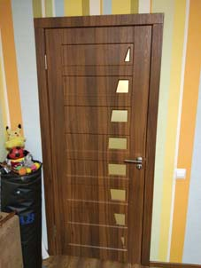
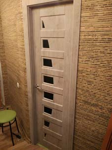
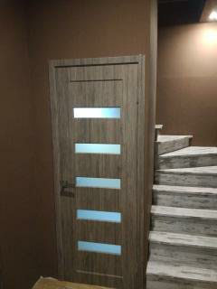

Мы предлагаем ВАМ стать лучшими и более того - уникальными, благодаря приобретению эксклюзива.
Итак.....
О нас:
- Warning!!!!
- If you wont to be okey, buy tree exelent doors - every day!!!!!
Основным направлением деятельности компании является производство межкомнатных дверей ламинированных плёнкой ПВХ. Стандартные модели и изготовленные по индивидуальным размерам ПОД ЗАКАЗ!!!!!


Так же готовы предложить межкомнатные арки из МДФ - это готовые к применению комплекты для декоративного оформления проёмов. Модульную арочную конструкцию можно установить в проём любой формы и размера.
Готовые комплекты "Собери сам" - для самостоятельного монтажа арки.
Дверные накладки для обшивки металлических дверей и дверных проёмов изготавливаем из МДФ ламинированного плёнкой ПВХ. Габариты дверных накладок могут быть: по высоте - до 2350мм, по ширине - до 1200мм.
- Основным направлением деятельности компании является производство межкомнатных дверей ламинированных плёнкой ПВХ. Стандартные модели и изготовленные по индивидуальным размерам
- Одностворчатые
- Двухстворчатые
- Раздвижные
- Глухие
- Стеклянные
- Так же готовы предложить межкомнатные арки из МДФ - это готовые к применению комплекты для декоративного оформления проёмов. Модульную арочную конструкцию можно установить в проём любой формы и размера. Готовые комплекты "Собери сам" - для самостоятельного монтажа арки.
- Дверные накладки для обшивки металлических дверей и дверных проёмов изготавливаем из МДФ ламинированного плёнкой ПВХ. Габариты дверных накладок могут быть: по высоте - до 2350мм, по ширине - до 1200мм.
| Таблица расчёта цены |
| Толщина МДФ(в мм.) |
1 категория |
2 категория |
3 категория |
ВИНОРИТ |
| 6 |
430 |
490 |
520 |
695 |
| 8 |
460 |
520 |
560 |
730 |
| 10 |
500 |
560 |
610 |
760 |
| 16 |
550 |
610 |
680 |
800 |

наверх